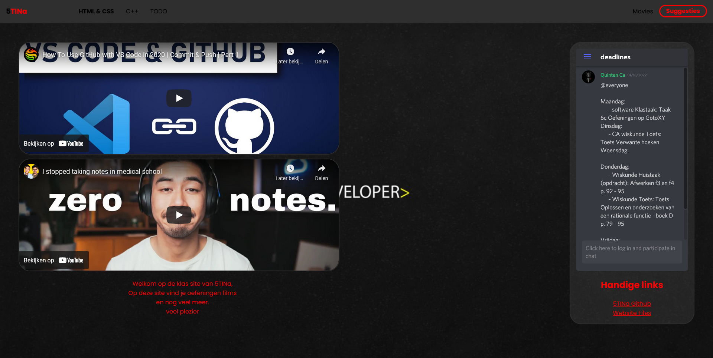

5Tina Site
Ik heb zo goed als de volledige eerste helft van mijn 5de Middelbaar aan gewerkt. Door dit project heb ik veel bijgeleerd en ook veel kunnen experimenteren.
Ik heb zo goed als de volledige eerste helft van mijn 5de Middelbaar aan gewerkt. Door dit project heb ik veel bijgeleerd en ook veel kunnen experimenteren.